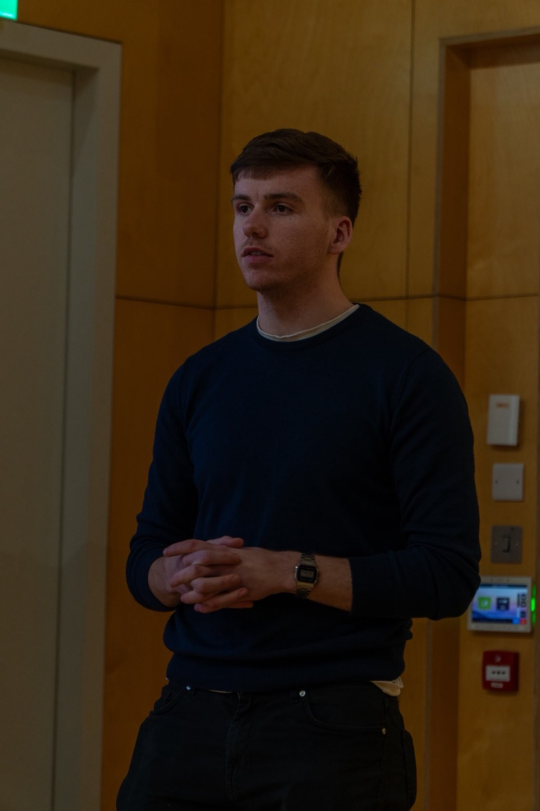
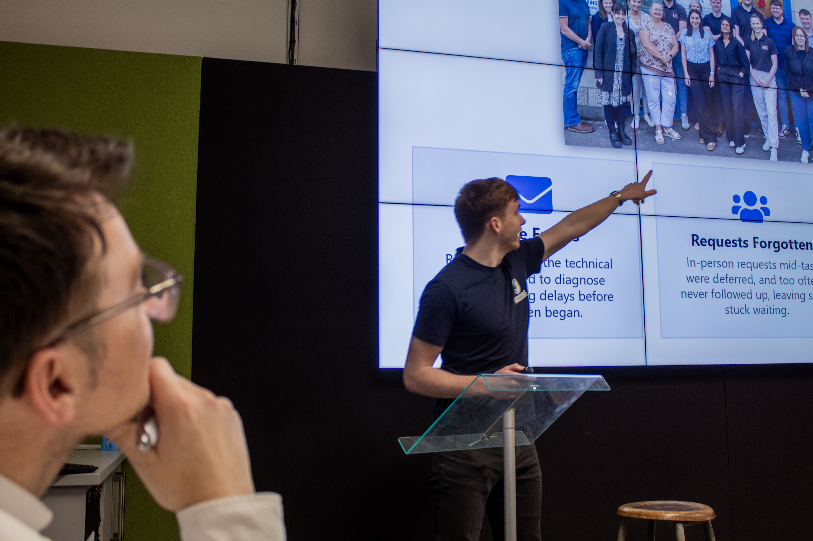
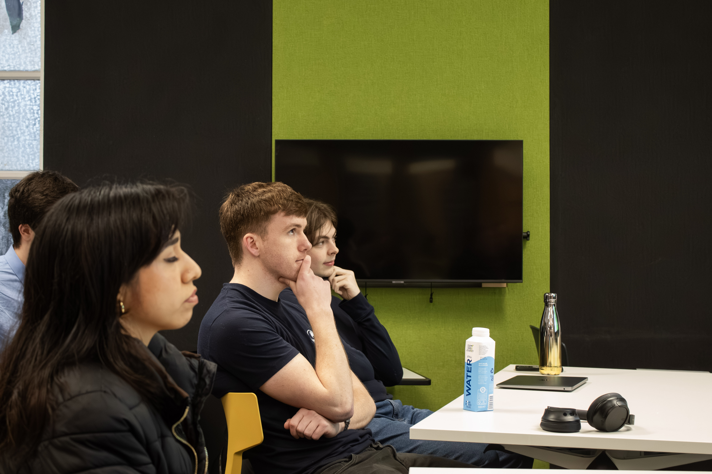
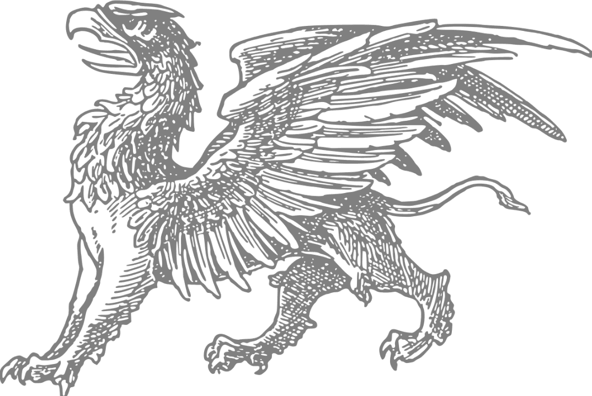

Observe
Listen to users, review current processes and identify where confusion, delay, duplication or missing information actually occurs.
I combine operational understanding, software development and user-centred design to turn fragmented workflows and information into practical systems teams can understand, adopt and use.
I work across the space between how organisations operate, what users need and what technology can reliably deliver.

My name is Olan Griffin. I love systems and I have a constant desire to improve upon them. I think in terms of problems and expand from there to create solutions.
My Business Information Systems background helps me examine a problem from both operational and technical perspectives. I work with users and stakeholders to understand the real process, make responsibilities and dependencies visible, and turn that shared understanding into a system that works in practice.
My approach combines empathy, analytical thinking and technical expertise. The aim is not technology for its own sake, but measurable business value, clear usability and implementation that holds up after launch.
A four-stage approach keeps the work grounded in the actual problem and the people who will use the result.
Listen to users, review current processes and identify where confusion, delay, duplication or missing information actually occurs.
Make fragmented information, responsibilities, dependencies and decision points visible enough for stakeholders to agree on the real workflow.
Translate that understanding into a technically sound application, workflow, automation or platform configuration.
Support adoption, build confidence, refine the solution with users and ensure the improvement becomes sustainable.
Selected work showing the connection between operational problems, structured information and usable technical delivery.
Echo is an IT helpdesk and knowledge-reuse system designed to improve ticket quality and make previous resolutions easier to retrieve and reuse.
Support requests often arrive with incomplete context. Important information becomes fragmented across tickets, repeated investigation is required, and relevant previous resolutions are difficult to find at the point of need.
I modelled the workflow around the needs of end users, IT agents and managers, combining structured issue capture with role-specific actions, reporting and reusable organisational knowledge.
Echo makes issues easier to describe, route and understand. It connects better information capture with faster access to relevant knowledge, reducing the friction involved in resolving recurring support problems.


Experience spanning digital leadership, service ownership, SaaS implementation and process improvement.
Holden Installations
Digital Lead
Lead digital improvement initiatives across operational, commercial, design and project teams. The work includes process and workflow design, stakeholder requirements, platform development and configuration, reporting tools, implementation support and technical delivery linked to business outcomes.

The Griffin Barber Company
Founder
Built and ran a client-facing service business end-to-end, from booking and delivery to presentation and reputation, balancing hands-on craft with the operational side of running a company.
Life Science Consultants
Financial and Technical Analyst Intern
Supported a SaaS platform rollout and ongoing reporting, working across financial analysis and internal process improvement to help the team adopt new tools smoothly. The role combined implementation support, reporting, user assistance and practical process improvement.
I am interested in roles and collaborations where operational understanding, software and AI can be combined to make complex work clearer and more manageable.